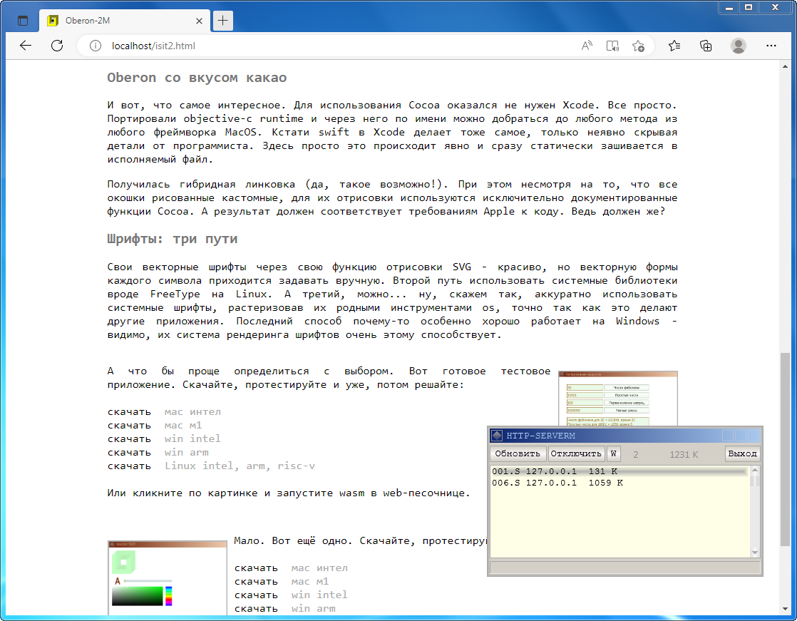

У многих из нас на жестких дисках или в старых архивах пылятся исходники, написанные еще со времен DOS. Это не просто код - это целая эпоха, ваши первые опыты и, возможно, гениальные находки. Почему бы не вдохнуть в них новую жизнь? Перенесите свои старые наработки в современную среду Oberon-2M и превратите их в аккуратные WebAssembly (wasm) модули.
Присылайте нам то что у вас получилось: будь то небольшая утилита, забавная программка или целое приложение. С радостью опубликуем вашу работу на этой странице. От вас нужно лишь краткое описание, скриншот и сам wasm-файл. Давайте вместе посмотрим, на что классические подходы и Oberon способны сегодня!
Как часто бывает - гладко было на бумаге, да забыли про овраги. Оказывается, wasm приложение нельзя просто так запустить в браузере, открыв html файл локально. Для корректной работы обязательно нужен HTTP-сервер. Чтобы вам было проще, вот собственное решение - легковесный и простой HTTP-сервер, написанный на Oberon-2M ORM.

Не нужно искать сложные инструменты. Наш сервер - это один компактный исполняемый файл для 64-битных Windows, не требующий установки. Просто скопируйте его в любую папку. Как настроить. Постарались не усложнять. Есть ini файл, в нем port, в нем root. Вроде всё.Да при запуске в браузере, сервер отзывается на "localhost" или магическую комбинацию "127.0.0.1", набранную в адресной строке браузера.
HTTP сервер - не просто утилита, а наглядный пример возможностей Oberon-2M для создания серьезного системного ПО. Реализован с использованием как динамической, так и, что ключевое, полноценной статической объектной модели. Это позволяет создавать высокопроизводительные и надежные приложения.
Ключевые особенности. Настоящая многопоточность на основе WinAPI. А как же без неё. Полное отсутствие управления кучей в рабочем коде. Все объекты статические. Как следствие - нулевые утечки памяти, нет подвисающих ссылок. Как результат - нечему ломаться, бесперебойная работа 24/7. Проверено. Работает.
Скачать HTTP-сервер. В архив также добавлен пример wasm-приложения, чтобы вы могли сразу всё протестировать.